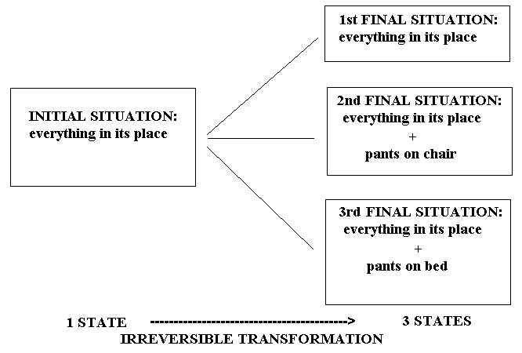

ENTROPY AND MY ROOM
By Eva Martínez Pérez
Bachelor in Chemical Science
When I was performing
the assignmets of a subject I had the opportunity to know a very useful magazine
in our library. It is the "Journal of Chemical Education", useful
not only for those that teach but also for the students. One of its sections
is called "applications and analogies", and, as its name indicates,
it usually has curious analogies to understand scientific concepts of difficult
comprehension. So, if it is of any use for any of you, here is the following,
from my own orchard, so to speak; I would appreciate any suggestion or correction.
We have all heard about entropy, and
many have had to study it. With it, many concepts such as disorder,
number of states, irreversibility, spontaneity, information,
and may others, always appeared. Let´s think about those concepts hopelessly
linked to entropy.
DISORDER AND NUMBER OF STATES
We all have in our heads an intuitive
idea of disorder. However, we must make very clear that, in scientific terms,
disorder is given by the number of states in which a system may be. A system
will be more disordered than other when the number of states in which the first
can be found is greater than for the second.
Think about something that is disordered...
"my room!" is what more than one will have thought of. Your mother
would like you to have it ordered; that is, your mom would be the happiest woman
in the world if you had your pants on their hanger inside the closet, your shoes
in that little cabinet she bought you for that, your notes inside the binders
she gave you for your birthday, the pens and pencils inside their cup and not
lying around the table (figure 1),...; that is, everything in its place. Your
room will be ordered only when it can be in a single way: everything in its
place.
- FIGURE 1 -
However, besides their own place,
you allow the objects in your room to occupy many othe places: your pants may
be on their closet hangers, on the bed, on the rack behind the door, or on a
chair; you may leave the shoes in the closet or on any part of your room's floor;
your class notes may be in their binders or on the table, or in your schoolbag,
on a shelf, or on the bed; your pencils may be in their holder or in any old
place.
Then, we will find your room in one
way in the morning, but in the afternoon it may be in another if you have changed
the things from one place to another. Each time we look at your room it will
be different and you have a sensation of disorder. You allow your
room to have more states
and, therefore, more disorderly,
both in the scientific and in the everyday sense of the word.
Taking into account that entropy is
the measure of disorder, if your room is more disorderly, it means that it is
more "entropized" thermodynamically.
ENTROPY AND IRREVERSIBILITY
With little knowledge of thermodynamics
we know that in irreversible processes the entropy of the system increases,
and viceversa; if a system experiences an increase of entropy after a process,
this process is irreversible.
We will show your mother that once
you have your room in disorder, it is almost impossibel to return it to its
initial order. It is a question of probability.
Your mother starts from an initial
situation in which everything may only be in one place: its own. Therefore,
your room may only be found in one state (few permitted states, much order,
little entropy); for example, let your pants to be hung in their hanger inside
the closet. You wear them and leave them in a place that is not their own, be
it on the bed or on the back of a chair. That is, your room may now be found
in three different states: with your pants in the closet, on the bed or on the
chair.

- CHART 1 -
You have made a transformation in which the final situation has more states than the initial one (initial situation: only one state, everything in its place; final situation: three states, everything in its place, or everything in its place but the pants on the bed, or everything in its place and the pants on a chair.) (Chart 1).
So, this proces in which there has been an increase in the number of states, of disorder, of entropy, is reversible? Yes and no. If you take the pants again and leave them again, as long as it is possible to leave them anywhere, it is certain not to occur you to leave them where you took them the first time (their hanger in the closet). The probability that the place you choose at random is not their place in the closet is not unity, but less. Therefore, there is a low probability that you just leave things as they were at the beginning.
For your mother, who only allows one state to the system, the probability of leaving the room in that state is unity. Whereas for you, there is:
· 1/3 probability of leaving the room ordered (1st final situation)
· 2/3 probability of leaving the room in disorder (2nd and 3rd final situations)
That is to say, you have more probability of leaving it disordered because there are more possible states of doing so, and only one which we intuitively call orderly.
The solution is then very simple, not allowing your things more than one possible state: the place your mother assigns them.
ENTROPY AND SPONTANEITY
We all know by looking at the worl around us that spontaneity implies irreversibility. That is to say, if a process occurs spontaneously, without any energetic supply, it doesnt tend to go back to the initial situation; the process is irreversible. Logically, if it occurs spontaneously it is because it goes to a more "comfortable" or more probable situation, and Nature is no fool; it will not go to an initial, less "comfortable" of probable situation just like that.
We also have seen that irreversible processes imply an increase of the entropy of tye system.
Therefore, if spontaneity implies irreversibility, and this implies an increase of entropy, spontaneous processes involve an increase of entropy.
Your mother asks herself why is your room always so disorderly, even though she sometimes arranges it and places everything in its place: pants on their hanger, shoes in the closet, notes in their binder, and pens in their pot. However, every time you take something from your room, you disorder it, increasing the entropy in your room. - FIGURA 2 -
Why? Easy, because when you leave something in your room following the law of Nature of the least consumption of energy, you do not stop to think and for you any place is allowed to place your things. You perform an spontaneous process (without energetic supply) by leaving an object in your room, and, as you may leave it anywhere, your room may be found in many differente ways. More states, more disorder, more entropy.
ENTROPY AND INFORMATION
What your mother does not understand when you leave things in a place that is not their own, is of great help to your sister. You give your pants more than one possible state (in the closet, or on the bed, or on a chair, or hung behind the door) and this allows your sister to know your mood; according to where you leave your pants, she knows if you are angry, happy, sad, etc. If you only allowed one state to your pants (their own place, be it that decided by your mother, or any other), your sister would lose information because she would always think that you are in the same mood, the one corresponding to the place assigned to your pants. At least, your mother would not be angry.
That is , the more allowable states a system has, the greater information may be stored and supplied.
Lastly, remembering that analogies are useful inasmuch as you limit their similarity to reality. That is, an analogy does not explain everything to which it is compared. I will reiterate my thanks to the possible corrections to this analogy.
______________________________________________________________________
BIBLIOGRAFÍA:
· Callen, H.B., "Thermodynamics and an introduction to thermostatistics". John Wiley & Sons, USA (1985)
· Zemansky, M.W., "Calor y Termodinámica", McGraw-Hill, Mexico (1990)
· De Teresa, J.M., Lumen, 6, 32 (1993)